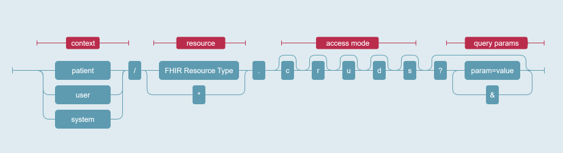

Specification of health data transfer from devices to DiGA (§ 374a SGB V)
Seiteninhalt:
SMART on FHIR v2 (based on the HL7 SMART App Launch Framework) extends OAuth with semantically meaningful scopes that map directly to FHIR resources. This allows access to be restricted not only by resource type, but also by subsets of values (e.g., specific vital signs defined by the MIVs). A general overview of SMART scopes can be found in the official specification: SMART App Launch Framework – Scopes and Launch Context.
The core idea behind SMART scopes is to enable applications to request only the minimum data necessary for a defined use case, and to allow patients to understand and control which types of health data will be shared. A SMART scope defines who is accessing data (context), which FHIR resources are involved (resource), what actions are permitted (access mode), and optionally which subsets of data are addressed through query parameters (query params). The following diagram illustrates the structure of SMART scopes:

Examples of SMART scopes:
| SMART Scope | Description |
|---|---|
patient/Observation.rs?code:in=https://gematik.de/fhir/hddt/ValueSet/hddt-miv-blood-glucose-measurement |
Read and Search access to all blood glucose observations of a patient, limited by a ValueSet published on ZTS. |
patient/Observation.rs?code:in=https://gematik.de/fhir/hddt/ValueSet/hddt-miv-blood-pressure-measurement |
Read and Search access to all blood pressure observations of a patient, including systolic and diastolic values. |
patient/Device.rs |
Read and Search access to device resources of a patient. |
patient/DeviceMetric.rs |
Read and Search access to measurement configurations of a patient. |
Concrete SMART scopes are always MIV specific: a DiGA treating diabetes MAY request access to blood glucose measurements, while a DiGA focused on hypertension MAY request access to blood pressure values. A DiGA MAY also request access to multiple MIVs if this is required by its intended medical purpose.
While the SMART scopes are configured and consented to on the Device Data Recorder’s OAuth2 Authorization Server as described in the pairing chapter, it is vital that the Device Data Recorder’s FHIR Resource Server strictly enforces these scope restrictions. Even if a DiGA holds a valid access token, it MUST only be allowed to retrieve data elements explicitly covered by the granted SMART scopes. Failure to enforce these restrictions would undermine the purpose of fine-grained consent and could result in unauthorized disclosure of sensitive health data. Proper enforcement ensures that patient consent is respected at the technical level and that data access remains fully aligned with the intended use case.
Each MIV defined in the Mandatory Interoperable Values section specifies a corresponding ValueSet that contains the LOINC codes representing the clinical measurements relevant to that MIV. These ValueSets are published on the Central Terminology Server (ZTS) of gematik and are referenced in the DiGA-VZ for each DiGA authorized to access data via the HDDT interface.
Only a limited set of FHIR resources is relevant within the scope of this specification. The following resources and their corresponding SMART scope structure define the permissible access patterns between a DiGA and a Device Data Recorder.
| FHIR Resource | Description | SMART 2.0 Standard | Specifications |
|---|---|---|---|
| Observation | FHIR Observation resources MUST be authorized using the code:in parameter together with a reference to the MIV-specific ValueSet. A separate scope MUST be provided for each MIV. |
Finer-grained resource constraints using search parameters | scope: patient/Observation.rs?code:in={Canonical ValueSet URL}• {Canonical ValueSet URL} MUST exactly match the URL reference stored in the DiGA-VZ for the corresponding MIV ValueSet for a specific DiGA.• Authorized DiGA MUST have read and search access only. |
| Device DeviceMetric |
FHIR Device and DeviceMetric resources MUST be authorized at the resource level. Their authorization MUST always be semantically linked to the corresponding authorized Observation resources. Only Device and DeviceMetric resources MAY be accessed that are related to the corresponding Observation resource or that performed the measurement of the MIV-specific data for that Observation. | Patient-specific scopes | scope: patient/device.rs patient/devicemetric.rs• Authorized DiGA MUST have read and search access only. |
All enforcement rules defined in the official SMART App Launch Framework – Scopes and Launch Context specification apply without exception. These rules define the general semantics of SMART scopes and how they restrict FHIR resource access.
However, the official SMART specification does not consider concrete implementation guides (IGs) or the domain-specific relationships between resources. In the context of § 374a SGB V and the interoperability profiles defined for sharing device data between Device Data Recorders and DiGA, additional enforcement rules are defined for the resources Observation, DeviceMetric, and Device.
Observation resources are the primary and anchoring resource for all scope enforcement. SMART scopes of the form
patient/Observation… determine which clinical measurements a DiGA is entitled to access. The remaining resources
(DeviceMetric, Device) are only made available in relation to these Observations.
Concretely:
code:in search parameter MUST be applied. Only Observations whose code is contained in the
MIV-ValueSet referenced by the authorized SMART scope MAY be returned.sub
/Pairing ID in the access token.A Device Data Recorder MAY manage multiple devices and observations spanning different MIVs (e.g., blood glucose for
diabetes, heart rate for cardiology, blood pressure for hypertension). If Devices or DeviceMetrics were returned purely
based on the SMART scopes patient/Device.rs and patient/DeviceMetric.rs, the only restriction would be that the
resources need to belong to the patient. In that case a DiGA could learn about other devices or conditions unrelated to
its authorized use case. To prevent this leakage, Devices and DeviceMetrics MUST always be filtered through their
relationship to authorized Observations.
Two constellations of relations between resources are relevant:
For both constellations, the following compartment rule applies:
patient/Observation… SMART scope.This enforcement model makes the Observation and its authorized SMART scope the single anchor point for all related data. Device and DeviceMetric resources never “stand alone” but are revealed only insofar as they are part of an Observation chain permitted by the patient’s consent. This ensures that consent is applied consistently, prevents cross-use-case data leakage, and upholds the principle of fine-grained, use case–specific access.